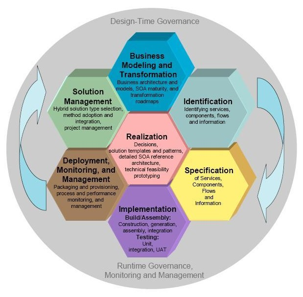

| Guideline: When to Make Realization Decisions |
 |
|
Making realization decisions for services, flow, components, information, rules and policies is one of primary focus of Realization phase in SOMA but the realization decisions can be made early on in the SOMA lifecycle. Realization decisions are made in SOMA as and when the information becomes available in the lifecycle. Making realization decisions, performing technical feasibility exploration and detailing the reference architecture are key capabilities patterns for Realization phase but are applied continuously in the SOMA lifecycle. That is why Realization seats in the center of the fractal lifecycle of SOMA as illustrated below.  An important point to reiterate is that SOMA phases are not linear as shown in figure above. In the lifecycle of the service oriented project uses more of what you would like to call a fractal lifecycle although a work breakdown structure as in a delivery process presents a linear view of the lifecycle. The notion of a fractal lifecycle is a combination of several key principles. The first principle a fractal software development is one of self similar scope. This means that the tasks and activities are carried out in a similar way in smaller scopes as well as larger scopes of applicability. The notion of “similarity” suggests that the application is similar but not identical meaning that as we approach an increasingly larger scope and elaboration; even though the same tasks apply additional work needs to be evolving in order to take account factors of the larger scope. The second principle of fractal software development is successive iteration. The concepts of iterative and incremental development life cycles have existed for a long time. They focus on prioritization and mitigation of risk factors in order to ensure the product quality of the solution. This has its roots in the spiral model of software development. Successive iteration is connected with the notion of service evolution and implies a focus on not only the risks associated with the implementation, but also with the dependencies associated with the service portfolio as services evolve through the life cycle. The notion of service dependencies on other services, and potentially other dependencies on actual back-end systems, databases, and components, must be called out as we try to make the realization decisions. |
| © Copyright IBM Corp. 1987, 2012 All Rights Reserved Property of IBM These materials are intended only for use as part of an IBM engagement |